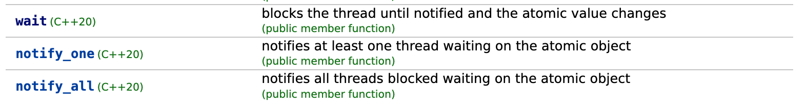

如果我们将Go语言的并发原语弄的滚瓜烂熟，那么我们使用组合的方式，创造出更高级的并发原语，针对一些特定的并发场景，可以提供更高效的并发原语。
这篇文章就是就是利用atomic中的并发原语和条件变量，组合出类似C++ 20规范中atomic类型的wait/notify_one/notify_all的功能。
C++20中的wait/notify_one/notify_all

在C++ 20规范中，为atomic类型增加了wait/notify_one/notify_all的功能，这样就可以实现类似Java中的wait/notify/notifyAll的功能.
这三个方法类似于Go中的Cond(条件变量)的Wait/Signal/Broadcast方法。
- wait: 阻塞当前线程，直到被通知且原子值被改变， 类似于Go中的Cond.Wait
- notify_one: 通知至少一个阻塞在这个原子值上的线程， 类似于Go中的Cond.Signal
- notify_all: 通知所有阻塞在这个原子值上的线程， 类似于Go中的Cond.Broadcast
c++也有条件变量，但是和Go的Cond类似，条件变量需要和mutex一起使用，而atomic类型的wait/notify_one/notify_all不需要和mutex一起使用的。
注意wait这个函数，
1 2 3 4
| void wait( T old, std::memory_order order = std::memory_order::seq_cst ) const noexcept; void wait( T old, std::memory_order order = std::memory_order::seq_cst ) const volatile noexcept;
|
它的行为就像重复下面的操作一样：
- 比较
this->load(order)和old的值
- 如果相等，就阻塞当前线程，直到被
notify_one() 或者 notify_all()唤醒,或者线程被虚假的解锁
- 如果不相等，就返回
这个函数保证返回时原子值被改变了，不管它是被唤醒的还是使用底层技术以虚假方式取消阻塞。
一个例子：
1 2 3 4 5 6 7 8 9 10 11 12 13 14 15 16 17 18 19 20 21 22 23 24 25 26 27 28 29 30 31 32 33 34 35 36 37 38 39 40 41 42 43 44 45 46 47
| #include <atomic> #include <chrono> #include <future> #include <iostream> #include <thread> using namespace std::literals; int main() { std::atomic<bool> all_tasks_completed{false}; std::atomic<unsigned> completion_count{}; std::future<void> task_futures[16]; std::atomic<unsigned> outstanding_task_count{16}; for (std::future<void>& task_future : task_futures) task_future = std::async([&] { std::this_thread::sleep_for(50ms); ++completion_count; --outstanding_task_count; if (outstanding_task_count.load() == 0) { all_tasks_completed = true; all_tasks_completed.notify_one(); } }); all_tasks_completed.wait(false); std::cout << "Tasks completed = " << completion_count.load() << '\n'; }
|
这个程序创建了16个异步任务，每个任务模拟了一些工作，然后通过原子操作更新已完成任务数量和未完成任务数量。主线程等待所有任务完成后输出已完成任务的数量。
注意： 由于 ABA 问题，原子值瞬态变化老到另一个值，然后返回到老的值，这个变化可能会被监听者锁遗漏，被Wait方法阻塞的线程无法解锁。
rust也有人提出了这样的需求:Is there a wait() and notify() for atomics?
使用场景
大部分场景下，我们使用C++的std::condition_variable或者Go语言中的sync.Cond就可以了。
比如使用Go语言中的条件变量，我们可以将上面的例子改造成下面的代码：
1 2 3 4 5 6 7 8 9 10 11 12 13 14 15 16 17 18 19 20 21 22 23 24 25 26 27 28 29 30 31 32 33 34 35 36 37 38 39 40 41 42 43 44 45 46 47 48 49
| package main import ( "fmt" "sync" "sync/atomic" "time" ) func main() { var mu sync.Mutex cond := sync.NewCond(&mu) var completed atomic.Bool var completionCount atomic.Int64 var outstandingTaskCount atomic.Int64 outstandingTaskCount.Store(16) for i := 0; i < 16; i++ { go func() { time.Sleep(50 * time.Millisecond) completionCount.Add(1) newValue := outstandingTaskCount.Add(-1) if newValue == 0 { completed.Store(true) cond.Signal() } }() } mu.Lock() for !completed.Load() { cond.Wait() } mu.Unlock() fmt.Printf("Tasks completed = %v\n", completionCount.Load()) }
|
可以看到，我们使用atmoic的类型，加上Cond (包括Mutex)，可以实现变量更改了，并且达到某个条件时，通知等待者的功能。
针对这种使用atmoic的场景，我们是不是可以把atomic + Cond封装成一个新的类型，这样就可以更方便的使用了。
一旦封装起来，就像C++ 20这样做的一样，为atomic类型增加了一个通知的“翅膀”，在条件(配置)监控、消息等待、事件通知的场景中，可以更方便的使用。
接下来就是我做的一个尝试。
相关的代码可以在github.com/smallnest/exp/sync/atomicx上找到。
使用atomic.XXX和Cond, 实现wait/notify_one/notify_all
不像Rust、Scala这样的语言，Go语言表达能力还不是那么丰富，所以我们无法在原有的atomic.XXX类型上增加wait/notify_one/notify_all的方法，只能创建一个新的类型，然后在这个类型上增加这三个方法。
我们还是沿用Go语言的Wait/Signal/Broadcast的命名方式，这样使用者就不会感到陌生,而不是C++的wait/notify_one/notify_all命名方式。
你可以看到，标准库atomic包下针对不同的基本类型，有对应的atomic.XXX类型，比如atomic.Bool、atomic.Int32、atomic.Uint64等等，所以我们也沿用这种方式，创建了atomicx.Bool、atomicx.Int32、atomicx.Uint64等等。
你可以思考一下，为什么Go标准库不写成泛型的方式，，只提供一个atomicx.Atomic[T]类型，这样就可以避免创建这么多的类型了。
我们以atomicx.Int32为例，看看它的实现。
这里我们采用组合的方式，将atomic.Int32和sync.Cond组合在一起，然后在这个组合类型上增加Wait/Signal/Broadcast方法。
1 2 3 4 5 6 7 8 9 10 11 12 13 14 15 16 17 18 19 20 21 22 23 24 25 26 27 28 29 30 31 32 33 34 35 36 37 38 39 40 41 42 43 44 45 46
| type Int32 struct { atomic.Int32 mu sync.Mutex condvar *sync.Cond } func (ai *Int32) Wait() { v := ai.Load() ai.mu.Lock() defer ai.mu.Unlock() if ai.condvar == nil { ai.condvar = sync.NewCond(&ai.mu) } for ai.Load() == v { ai.condvar.Wait() } } func (ai *Int32) Broadcast() { ai.mu.Lock() defer ai.mu.Unlock() if ai.condvar == nil { ai.condvar = sync.NewCond(&ai.mu) } ai.condvar.Broadcast() } func (ai *Int32) Signal() { ai.mu.Lock() defer ai.mu.Unlock() if ai.condvar == nil { ai.condvar = sync.NewCond(&ai.mu) } ai.condvar.Signal() }
|
我们采用Go标准库sync包中的各种同步原语的风格，声明的时候默认零值，不需要new(XXX)方式显式创建，这样使用起来更方便。
这样就带来一个问题，怎么初始化sync.Cond字段呢？它是需要NewCond 函数创建的，传入一个Locker。
这里我们使用一个技巧，惰式初始化，需要使用它的时候，先请求锁，然后在检查它是否初始化了，如果没有初始化，就初始化它。
Wait方法就是不断的Load这个原子值，和初始值进行比较，如果相等，就阻塞当前线程，直到被Signal或者Broadcast唤醒，当值不一致时，返回。
Signal和Broadcast方法就是调用sync.Cond的Signal和Broadcast方法。
这是一个比较简单的通过组合的方式实现C++ 20中atomic类型的wait/notify_one/notify_all的功能的例子。
相信将Cond和Mutex的实现的代码拆解出来，再加上atomic.XXX的实现，你可能会实现性能更高的同样功能的同步原语，那样代码可能就变得复杂反而不如这种组合的方式更容易维护。
使用atomicx改写上面的例子
既然我们实现了一个封装类型atomicx.Bool,我们就用起来。
那么我们就可以把下面三个字段使用一个var completed atomicx.Bool来替换了。
1 2 3 4 5
| var mu sync.Mutex cond := sync.NewCond(&mu) var completed atomic.Bool
|
如果条件满足，我们可以把completed设置为true,并且通知一个等待的goroutine。
等待的goroutine的代码也可以简化，只使用一条completed.Wait()就行了，不需要加锁和For循环。
1 2 3 4 5 6 7 8 9 10 11 12 13 14 15 16 17 18 19 20 21 22 23 24 25 26 27 28 29 30 31 32 33 34 35 36 37 38 39 40 41 42 43 44
| package main import ( "fmt" "sync" "sync/atomic" "time" "github.com/smallnest/exp/sync/atomicx" ) func main() { var completed atomicx.Bool var completionCount atomic.Int64 var outstandingTaskCount atomic.Int64 outstandingTaskCount.Store(16) for i := 0; i < 16; i++ { go func() { time.Sleep(50 * time.Millisecond) completionCount.Add(1) newValue := outstandingTaskCount.Add(-1) if newValue == 0 { completed.Store(true) completed.Signal() } }() } completed.Wait() fmt.Printf("Tasks completed = %v\n", completionCount.Load()) }
|
注意completed.Wait()一定要在completed.Store(true)之前，否则主goroutine可能永远被阻塞。
解决 ABA 问题
如果一个原子量快速的从A变成B，然后又快速的从B变成A，那么一个等待者可能会错过这个变化，从而导致它永远阻塞。
为了解决这个问题，我们可以在原子量的值的基础上增加一个版本号，每次变化的时候，版本号也会变化，这样等待者就可以检查版本号是否变化了，如果变化了，就不会阻塞。
下面就是定义了一个要原子操作的类型,每次做更改的时候:
1 2 3 4
| type Completed struct { Value bool Version int64 }
|
这样即使completed.Value的值从true变成false，但是Version的值也会变化，这样等待者就不会错过这个变化了:
1 2 3 4 5 6 7 8 9 10 11 12 13 14 15 16 17 18 19 20 21 22 23 24 25 26 27 28 29 30 31 32 33 34 35 36 37 38 39 40 41 42 43 44 45 46 47 48 49 50 51 52 53
| package main import ( "fmt" "sync" "sync/atomic" "time" "github.com/smallnest/exp/sync/atomicx" ) type Completed struct { Value bool Version int64 } func main() { var completed atomicx.Pointer[Completed] completed.Store(&Completed{Value: false, Version: 0}) var completionCount atomic.Int64 var outstandingTaskCount atomic.Int64 outstandingTaskCount.Store(16) for i := 0; i < 16; i++ { go func() { time.Sleep(50 * time.Millisecond) completionCount.Add(1) newValue := outstandingTaskCount.Add(-1) if newValue == 0 { completed.Store(&Completed{Value: true, Version: completed.Load().Version + 1}) completed.Store(&Completed{Value: false, Version: completed.Load().Version + 1}) completed.Signal() } }() } completed.Wait() fmt.Printf("Tasks completed = %+v, %+v\n", completionCount.Load(), completed.Load()) }
|